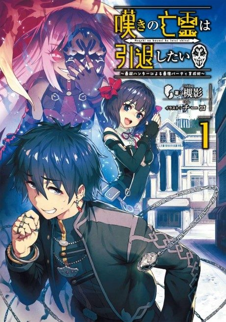

Anime
Anime
Light novel2024 · Action, Comedy, Fantasy
Let This Grieving Soul Retire
嘆きの亡霊は引退したい
AniList6.9
Animeter—
2 seasons24 ep
SourceVol. 4
2 seasons, 24 episodes
In airing order. Episode numbers on this site count straight through every season, so season 2 starts at episode 14.
1
2024 · TV
Let This Grieving Soul Retire
Episodes1–1313 ep
2
2025 · Web
Let This Grieving Soul Retire Cour 2
Episodes14–2411 ep
Sources: AniList